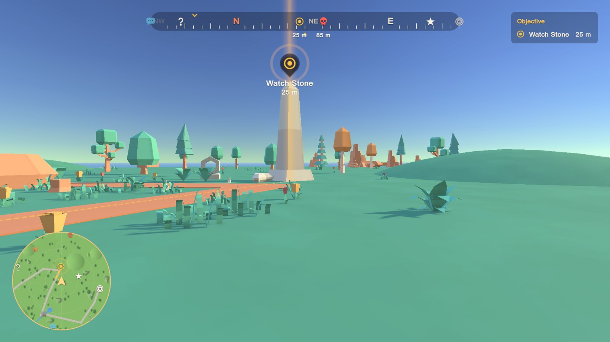

Showing the right icons
A good HUD shows few icons: what the player is heading for, and what is close. Bearing decides each place's icons on each display from three things, all of which you can change:


- Its state (Undiscovered, Discovered, Active, Completed, Hidden): the style's Place states section says which displays show each state. By default undiscovered places are a faint "?" on the compass, minimap and map only, and completed places are dimmed with a check.
- Its visibility rules: per display, whether it shows and how far away (this page).
- The caps: at most 8 markers on screen, 4 edge arrows, 10 compass icons and 40 minimap blips at once. When there are more, the objective comes first, then Priority, then the nearest.
The tracked place and the current objective always show (and the place a Waypoint Route leads to), whatever the rules say.
The rules #
The style's Showing the right icons section has one rule per display:
| Display | Default | Meaning |
|---|---|---|
| Screen | within 40 m | Markers over places in view |
| Edge | objective only | Arrows at the screen edge for places out of view |
| Compass | within 150 m | Icons on the compass bar |
| Minimap | always | Blips on the minimap (its own range limits it too) |
| Map | always | Pins on the full-screen map |
Each rule has Show (on or off), Within (metres; 0 = any distance) and Tracked Only (only the tracked place and the objective). A 2 m band stops a place blinking when the player stands right at a rule's distance.
Presets (the row at the top of the section, or the Chart Table's Places page):
| Preset | Screen | Edge | Compass | Minimap and map |
|---|---|---|---|---|
| Objective only | objective | objective | objective | everything known |
| Nearby only (default) | within 40 m | objective | within 150 m | everything known |
| Discovered places | within 80 m | objective | any distance | everything known |
| Everything | any distance | any distance | any distance | everything known |
Per category and per place #
- Categories: add a row to Categories with the category name (as on the Waypoint, not case sensitive) and its own rules. For example "Shop": Objective only, so shops wait on the map; "Enemy": screen within 30 m. In the Chart Table, filter the Places page by a category and pick a preset in Icons: it applies to that category.
- One place: Waypoint > Visibility: tick Own rules and set them.
The Chart Table's Shows on column lights S (screen), E (edge), C (compass), M (minimap) and P (map) for each place in its current state; the tooltip gives the distances.
Players #
The options panel has Icons: Game default, Objective only, Nearby or Everything. A player's choice replaces the style's and the categories' rules (a place's own rules still win). Turn the panel's screen options off in Player Options to keep it to your rules.
On the map #
Merge Overlapping (on by default): places whose pins would overlap on the full-screen map merge into one pin with a "+n"; zoom in and they separate. The objective, tracked places and the player's own marks never merge away.
Why can't I see it? #
The debugger (F8) and Why Can't I See It? say "its visibility rule keeps it off this display" when a rule hides a place, with where to change it.
From code: style.Visibility.ApplyPreset(VisibilityPreset.NearbyOnly), style.Visibility.For(place),
place.OwnVisibility, place.Visibility, WaypointPlayerSettings.Current.icons.